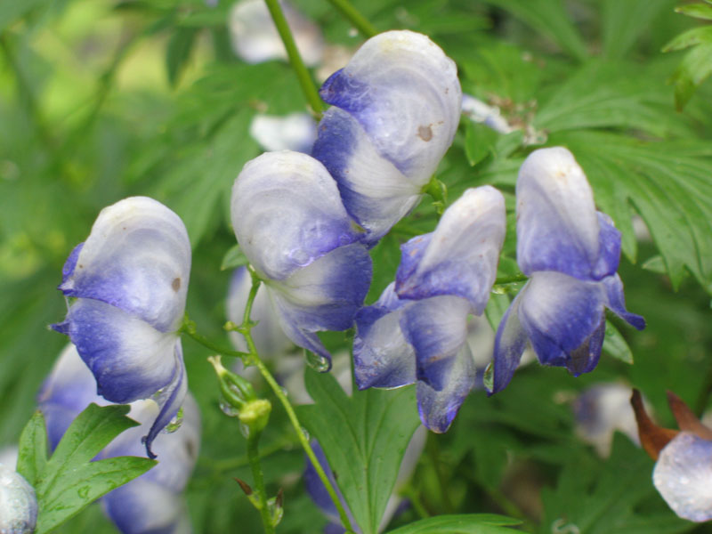
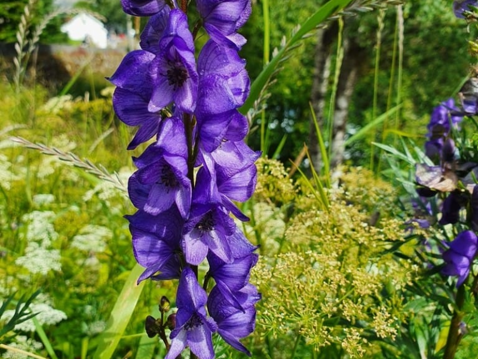
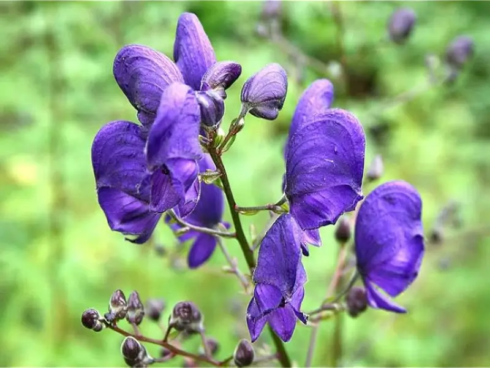
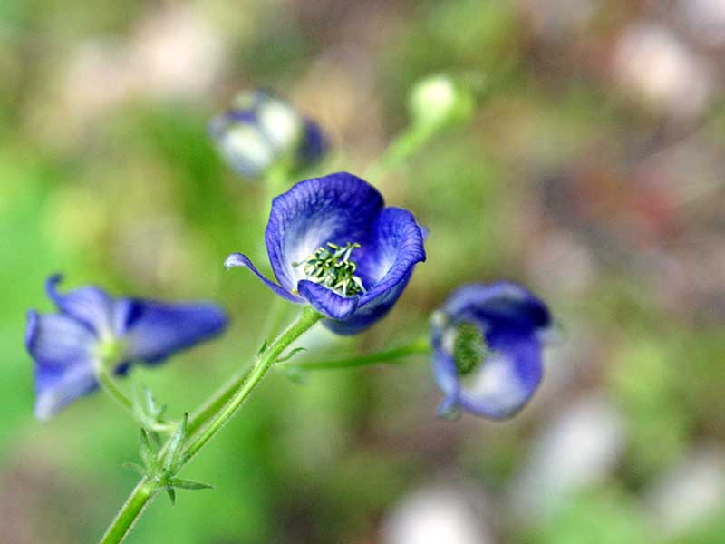

Meaning: Chivalry
Origin
Monkshood is linked to chivalry thanks to the shape of its purple petals: they resemble a medieval knight’s helmet.
Gallery




Aconitum

Meaning: Chivalry
Monkshood is linked to chivalry thanks to the shape of its purple petals: they resemble a medieval knight’s helmet.



